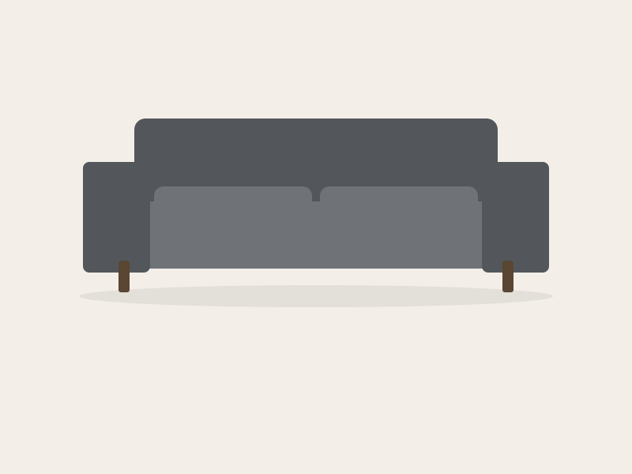
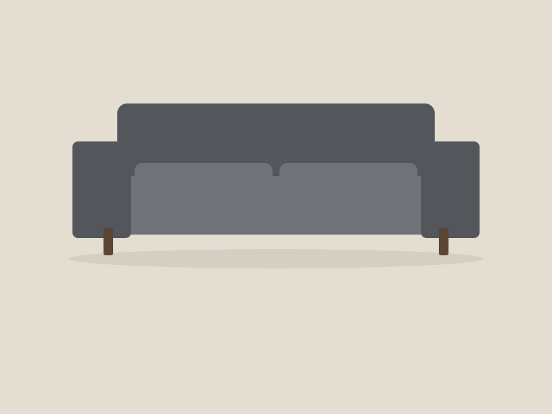

Sofa
Bergen Corner Sofa
€3,190.00
Item no. NH-1003
A generous corner sofa for the whole family. The durable charcoal weave hides everyday marks.
Dimensions
- Width: 280 cm
- Depth: 190 cm
- Height: 82 cm
- Seat height: 45 cm
Material & Construction
- Frame: solid spruce and particle board
- Suspension: pocket springs
- Cushions: foam with feather top layer
- Upholstery: polyester weave, charcoal
Features & Feel
- Deep, lounge-style seat
- Hard-wearing weave (40,000 Martindale)
- Corner can be mounted left or right